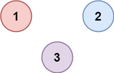

547. 省份数量
并查集：起初每城自成一省，扫矩阵上三角，相连且不同根就合并，每合并一次省份数减一。
思路
parent[i]起初都指向自己；find沿父指针找根，顺手路径减半压缩。- 矩阵对称，只扫
j > i的上三角；isConnected[i][j]=1时union一次。 - 根不同才真合并并
provinces--；同根说明早在一个省里，跳过。
图解
最优解
1class Solution {2 private int[] parent;3 4 public int findCircleNum(int[][] isConnected) {5 int n = isConnected.length;6 // 一开始每个城市自己是一个省7 parent = new int[n];8 for (int i = 0; i < n; i++) parent[i] = i;9 int provinces = n;10 // 矩阵对称，只扫上三角：相连且不同根就合并成一个省11 for (int i = 0; i < n; i++) {12 for (int j = i + 1; j < n; j++) {13 if (isConnected[i][j] == 1 && union(i, j)) provinces--;14 }15 }16 return provinces;17 }18 19 // 找根，路径减半压缩20 private int find(int x) {21 while (parent[x] != x) {22 parent[x] = parent[parent[x]];23 x = parent[x];24 }25 return x;26 }27 28 // 根不同才合并，返回是否真的发生了合并29 private boolean union(int a, int b) {30 a = find(a);31 b = find(b);32 if (a == b) return false;33 parent[a] = b;34 return true;35 }36}题目
有 n 个城市，其中一些彼此相连，另一些没有相连。如果城市 a 与城市 b 直接相连，且城市 b 与城市 c 直接相连，那么城市 a 与城市 c 间接相连。
省份 是一组直接或间接相连的城市，组内不含其他没有相连的城市。
给你一个 n x n 的矩阵 isConnected ，其中 isConnected[i][j] = 1 表示第 i 个城市和第 j 个城市直接相连，而 isConnected[i][j] = 0 表示二者不直接相连。
返回矩阵中 省份 的数量。
示例 1：

输入：isConnected = [[1,1,0],[1,1,0],[0,0,1]] 输出：2
示例 2：

输入：isConnected = [[1,0,0],[0,1,0],[0,0,1]] 输出：3
提示：
1 <= n <= 200n == isConnected.lengthn == isConnected[i].lengthisConnected[i][j]为1或0isConnected[i][i] == 1isConnected[i][j] == isConnected[j][i]
题面取自力扣当前版本。
数据快照 2026-11-04。题面版权归力扣所有，本站点仅供本人学习使用，请勿对外发布。